AI Portfolio · 2026
用 AI 把想法
做成上线的产品
刘嘉豪（Rein）· 2026 届 · 湖南财政经济学院 国际商务
求职方向：AI 产品助理 ／ AI 广告运营 · 燕山AI 2026 校园招聘（长沙）
手机 17718995693 ｜ 邮箱 2658656709@qq.com ｜ 湖南长沙
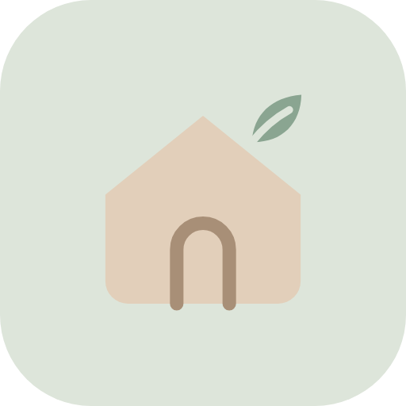
2 个已上线的 AI 辅助开发网页产品
+ 4 个早期 AI 原型与小工具
01
关于我背景 · 能力 · 与 AI 协作的方式02
绿仔的投资小屋美股中文 AI 日报 PWA · 主案例04
早期 AI 项目小游戏 Agent · 内容工具 · 拆解
一个把 AI 当“执行团队”、自己当“产品负责人”的商科生
我叫刘嘉豪，湖南财政经济学院国际商务专业 2026 届毕业生。我不是计算机科班出身，但从 2023 年上半年开始深度使用大模型：先是问答，后来用 AI 写代码、生成素材，现在用 AI Agent 把一个想法从需求一路推到上线。
我的做法是：我负责定义问题、写清需求和验收标准、做设计取舍；AI 负责写代码和批量生产内容。“绿仔的投资小屋”和“豪の小锅小灶”都是这样做出来、已经上线的产品。
历史汽车金融 / 美股休闲游戏（Steam 50+ 款深度体验）
教育背景
湖南财政经济学院 · 国际商务2022.09 – 2026.06
GPA 3.28/4.0（专业前 20%）· 英语四级 · 驾驶证 C1
- 主修：组织行为学(90)、会计学(90)、区域经济学(94)、经济法律概论(91)
- 2024 年校级二等奖学金；首届全国大学生职业规范大赛校级金奖
- 2023 年暑期三下乡校级一等奖、优秀实践个人、全国七彩假期服务示范团队成员
实习经历
小鹏汽车 宜家汇聚店 · 销售实习生
2026.05 – 2026.07
- 熟悉汽车销售全流程，了解用户从接触到成交的购车决策过程
- 协助带教主管完成 15+ 单成交
- 月有效线上联系（微信、电话等）100+ 次；线下门店留资 200+ 条
- 实习期间所在销售小组连续 3 个月门店业绩排名第一
我为什么适合 AI 产品 / 运营
- 商科背景：关心用户、转化和生意本身，而不只是技术
- 做过 0→1：两个网页产品从想法到公网上线
AI 工具链
| 方向 | 工具与用法 |
|---|
| Agent 系统 | 用 Cherry Studio 搭本地 Agent 工作台：持久记忆、多源搜索交叉验证、结构化输出；本地部署并调试 openclaw；用云端 AI Agent 完成“需求 → 代码 → 部署 → 每日自动更新”的完整链路 |
| 大模型协作 | Claude / DeepSeek / Grok / Gemini / GPT 等多模型深度使用，熟悉各自的能力边界和适用场景 |
| AI 辅助编程 | Cursor / Claude：用自然语言指挥 AI 输出可用代码并调试验证；GitHub Pages / Vercel / Replit 部署；在 CodeCombat 上系统补编程基础 |
| AIGC 素材 | GPT-image2 / Midjourney / 即梦 / 通义万相：可批量生成统一风格的投放素材 |
我和 AI 协作的方式（在两个上线项目里实际用过）
1 定义问题
先说清“谁、在什么场景、遇到什么麻烦”，再动手
2 需求 + 验收标准
把“要什么”写成能验证的条件，例如：所有涨跌幅都必须和真实收盘价一致
3 出方案 → 我来选
让 AI 出多版设计（如 3 版字标）并排比较，由我拍板，再小步迭代
02 · Case study · 主案例
绿仔的投资小屋
美股每日中文 AI 简报 · 移动端 PWA · 已上线
“美股的中文资讯太少了。我想打开手机，很快知道我关注的股票今天为什么涨、为什么跌。”
问题
美股的一手信息（财经媒体、公司公告、分析师评级、散户论坛）几乎都是英文，而且很分散。中文投资者想弄清一只股票“为什么动”，要翻好几个网站，还常常看到没有数据支撑、只说“某股大涨”的二手消息。
目标用户
关注美股的中文个人投资者（第一个用户就是我自己）：每天通勤或睡前有几分钟，想看结论、原因和不同观点，不想读长篇英文研报。
解决方案
一个手机优先的 PWA：把约 100 只自选股每天变成一份中文 AI 简报。信息来自公开信源，每一条涨跌说法都用真实行情数据核对；再让价值、成长、技术、宏观四个流派的 AI 分析师“辩论”，最后给出共识结论。
我的角色：产品负责人（代码由 AI Agent 编写）
- 定义问题、用户和信息结构（首页结论 → 个股原因 → 机构观点 → 情绪 → 辩论）
- 定验收标准：涨跌幅必须与收盘价一致；不写持仓数量、成本和盈亏
- 推动 4 轮设计迭代，最终字标从 3 版方案里由我选定
- 把一次性报告改成每天自动更新的产品（两份日报定时发布）
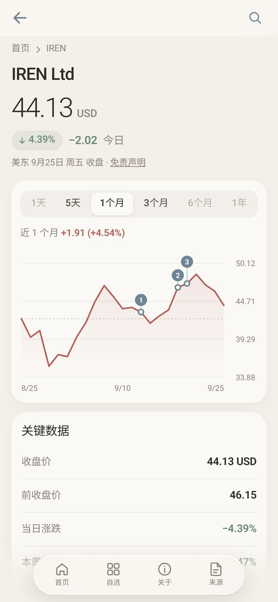
个股页：真实收盘价走势 + 新闻日期标注
一次典型使用（早上 7 点后，通勤路上）
1 看结论
首页一句话大盘结论 + 7 只重点关注的涨跌和一句话原因
2 查原因
点进异动个股：走势图上的新闻标记、机构观点、散户情绪
3 听不同观点
看四个流派怎么吵，再看共识卡片；需要时分享给朋友
说明：页面内容由 AI 基于公开信息生成，不构成投资建议。作品集与网站均不展示任何持仓数量、成本、盈亏或券商信息。
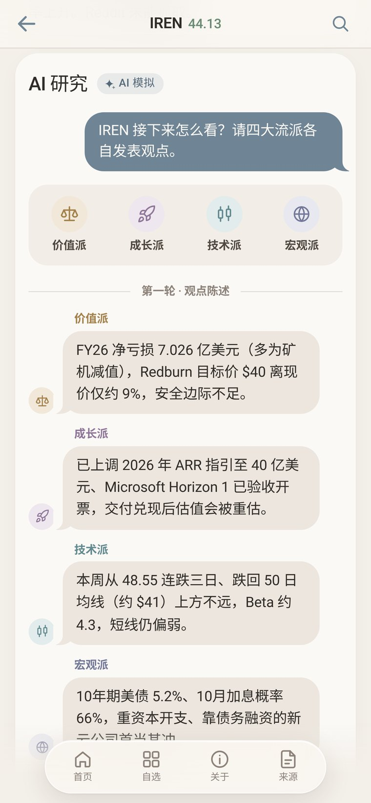
四流派辩论：开场 → @反驳 → 共识
① 首页 · 30 秒看懂今天
日期、一句话大盘结论、指数卡片、7 张“重点关注”卡片（价格、日/周涨跌、1 个月迷你走势、一句话原因）。
② 个股详情 · 为什么涨跌
用真实日收盘价画走势图（5 天 / 1 个月 / 3 个月），在关键新闻日期打编号标记，点击即可对照；下方是原因、机构观点、情绪条。
③ AI 流派辩论 · 不止一种声音
价值派、成长派、技术派、宏观派像群聊一样发言：开场一轮，再互相 @ 反驳，最后生成高亮的共识卡片，可分享、复制链接或存成图片。
④ 自选速览 · 约 100 只一屏扫完
今日大涨大跌及原因、本周涨跌、板块热力图，全部按涨跌幅绝对值排序；支持代码/名称搜索（键盘 / ↑↓ Enter）。
⑤ 符合中文用户习惯
红涨绿跌；不用 Google Fonts 等境外 CDN，国内打开快；可离线访问，支持“添加到主屏幕”。
⑥ 可信与隐私
“信息来源”页列出引用出处；每天发布前自动过滤措辞，一旦发现成本或盈亏类字段就中止发布。
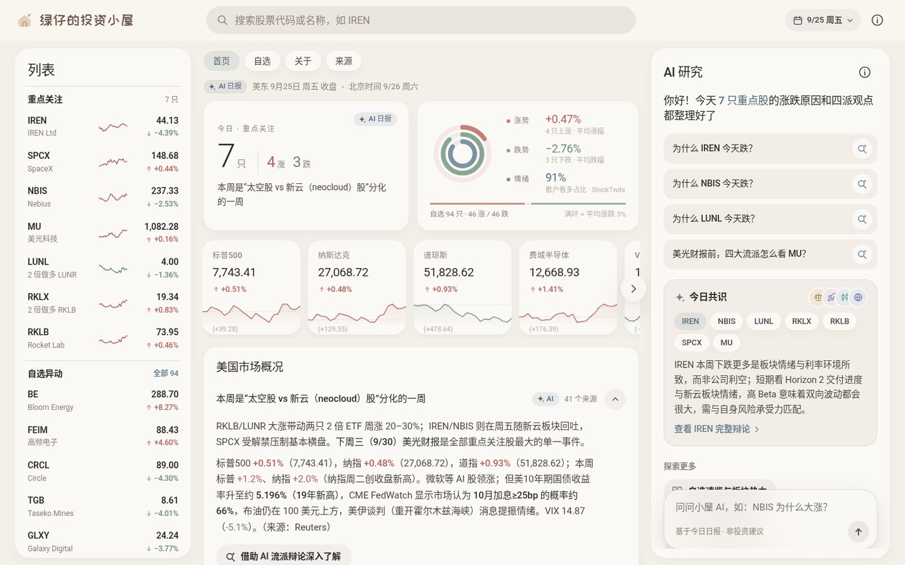
桌面端三栏布局：列表 · 市场概况 · “AI 研究”面板
1公开信源财经媒体
公司公告
分析师评级
StockTwits 情绪
→
2AI Agent 撰写按固定栏目生成中文日报：大盘 / 重点关注 / 原因 / 机构观点 / 情绪 / 四派辩论 / 共识
→
3真实行情校验抓取 Yahoo Finance 日线收盘价，用真实数据重算日/周涨跌幅
→
4结构化 + 隐私过滤Markdown → JSON；新闻日期转成图表标记；出现成本/盈亏字段即中止
→
5自动发布提交到 GitHub，Pages 自动部署；手机下次打开即是新报告
两份日报定时发布（北京时间）
| 时间 | 内容 |
|---|
| 22:30 | 盘中快讯：开盘后的主要异动和原因 |
| 07:00 | 收盘报告：完整日报 + 四派辩论 + 下周关注 |
旧日期的报告保留在日期选择器里，可以回看。
我定下的三条“红线”
- 真实：AI 写的每个涨跌幅都要和真实收盘价对得上，对不上就以真实数据为准
- 隐私：只展示代码、价格、涨跌和分析；持仓数量、成本、盈亏一律不上网
- 合规：明确标注“AI 生成、不构成投资建议”；图标全部手绘 SVG，不用第三方商标；字体使用 OFL 开源授权
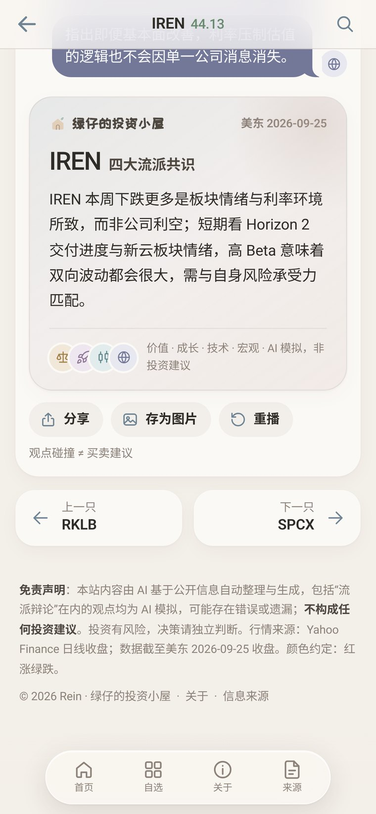
共识卡片：可分享 / 存图
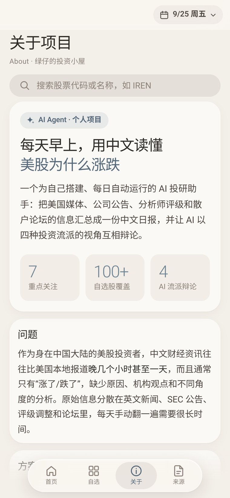
“关于”页：写给招聘方的项目说明
02 · Design iterations
设计迭代：4 轮，每轮一个决策
v1 到定稿都保留在 Git 提交记录里
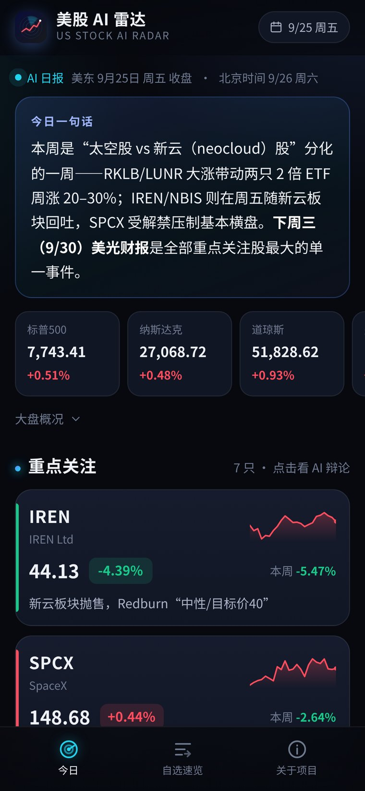
v1先跑通：深色信息流先做出每日数据管线和辩论界面，验证“这件事能每天做下去”。
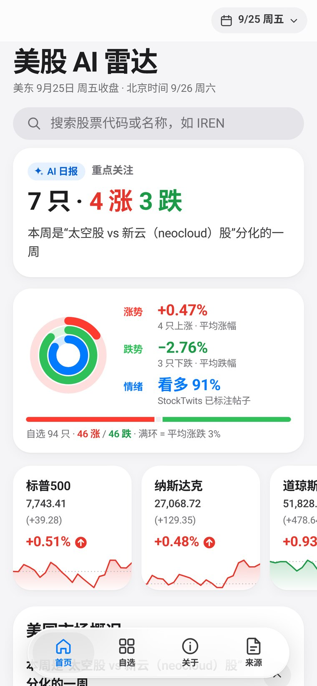
v2Google Finance 信息结构 × iOS Liquid Glass借用用户熟悉的财经信息布局，加上毛玻璃导航、胶囊标签栏、深色模式和搜索。
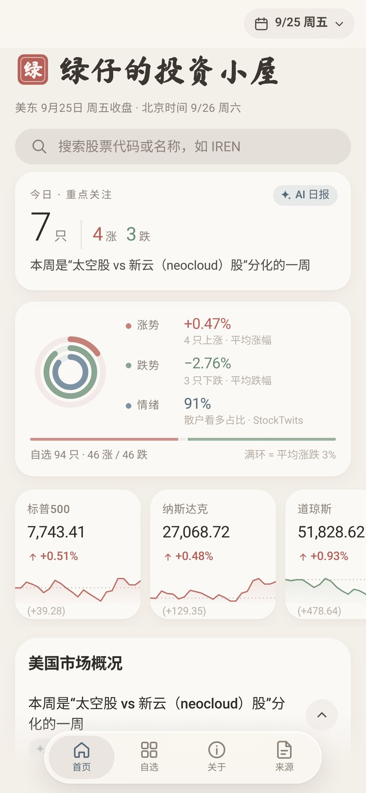
v3莫兰迪配色 + 改名看盘本身容易焦虑，于是换成暖灰、灰粉、灰绿的柔和配色，产品改名为“绿仔的投资小屋”。
v4字标 3 选 1，定稿 B出 3 版字标（A/B/C）并排对比，选定“小屋 + 叶子”，同步生成 PWA 图标和分享图。
字标方案对比：让 AI 出 3 版，由我来选
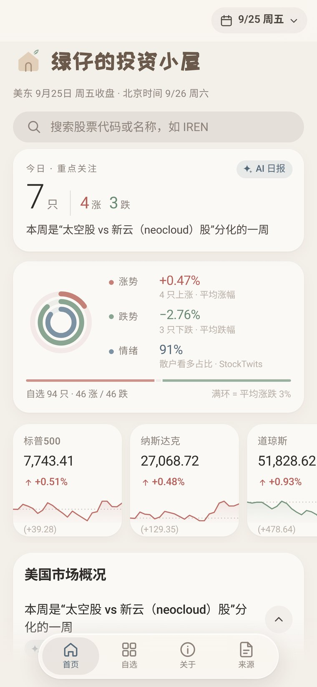
B ✓ 选定 圆润字体 + 小屋叶子：和“小屋”的名字最搭，亲切不焦虑
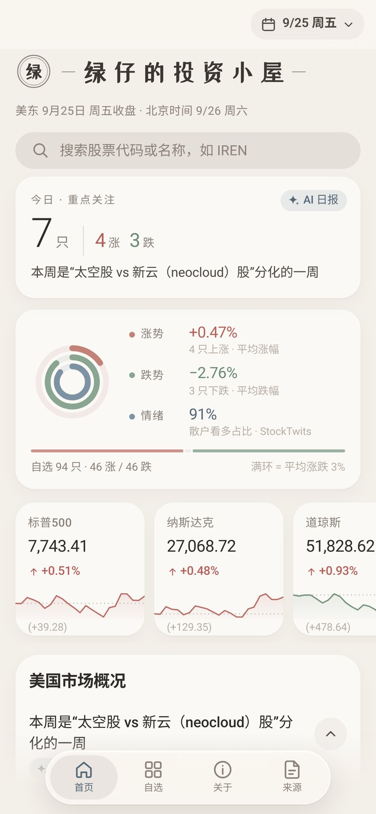
C 宋体杂志风 + 细线：显得专业，但偏冷
我学到了什么
1. 先保证“可信”，再追求“好看”。AI 写的内容一定要有真实数据兜底，所以“行情校验”是第一个做进流程的环节。
2. 需求要写成能验收的样子。比起“做得专业一点”，“所有涨跌幅与收盘价一致”这种说法，AI 能执行，我也能检查。
3. 设计就是做选择。一次出 3 版并排比较，比一版一版地改更快，也更容易讲清楚为什么选它。
4. 能自动更新，才算产品。一份报告做完就结束了；接上定时任务和自动发布之后，它才变成我每天真的会打开的工具。
共享菜谱网页 · 已上线（GitHub Pages）
一个以“我的菜谱”为核心的网页：收藏会做的菜，给美味程度打星，写下详细做法；周菜单和采购清单放在“更多”里。朋友打开链接就能看同一份菜谱，只有我（管理员）能修改和发布。
做这个的原因：一是记录自己做过的菜，不用每次重新打开 App、翻出视频、拖进度条找步骤；二是为做美食自媒体铺路，在视频评论区直接放在线菜谱链接，观众点开就能看，后续还可加入评论、批注、点赞打分等互动功能，是一个有差异化价值的切入点。
功能
- 菜谱列表按美味指数排序，支持搜索和分类筛选
- 菜品详情：半星评分、分类、备注、食材、做法、要点
- 周菜单 + 采购清单
- JSON 导出 / 导入备份
产品设计上的取舍
- 两种模式：本地打开时随意编辑、数据只存本机；线上打开时读取共享菜谱
- 权限：访客只读，管理员输入密码后才能编辑
- 在网页里发布：管理员一键把修改发布到线上，密钥只存在本机浏览器
- 防冲突：发布时如果线上已被改过，先拉取最新版本合并再重试
技术：纯静态 HTML/CSS/JS，无框架、无构建；数据存放在仓库的 menu.json；GitHub Actions 部署到 Pages。菜谱备注里注明了参考的博主来源。
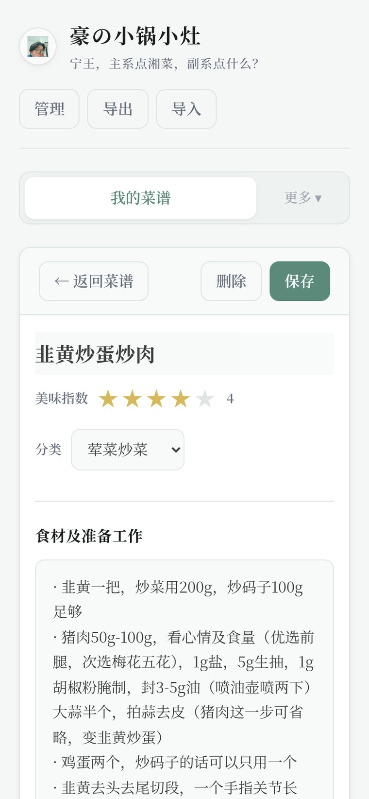
菜品详情：评分 + 做法
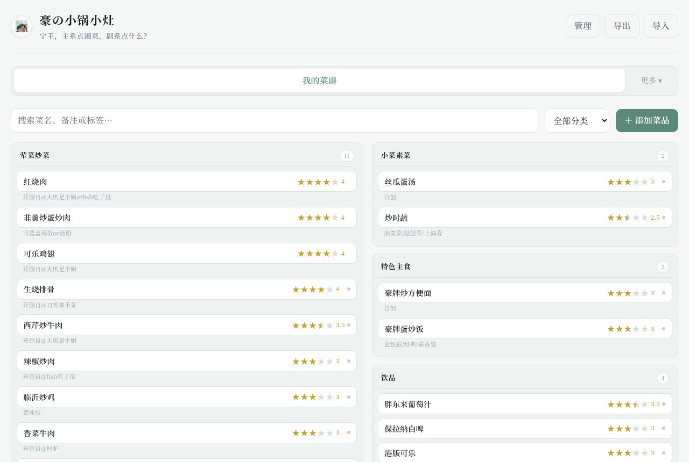
桌面端：按分类分组、星级一目了然
这个项目教会我的
小工具也要考虑“谁能看、谁能改、改冲突了怎么办”。先把访客只读、管理员可写的权限边界定清楚，后面的发布和冲突处理就有了依据。
04 · Earlier work · 2026 上半年
早期 AI 项目
从一次性原型，到能上线的小产品
AI Mini-Game Agent：一句话生成可玩的小游戏 已上线
用户输入一句描述 → Agent 自动判断属于哪类模板 → 生成一个完整可玩的小游戏。支持 Flappy Bird（轻量反应）、Dodge Runner（跑酷躲避）、Match-3（消除）3 种模板，并附上微信小游戏的部署步骤。
起因：和一家游戏公司的 HR 聊完后，自己边学边做出来，代码放在 GitHub。技术：Vercel 部署 · Agent 编排 · Prompt Engineering
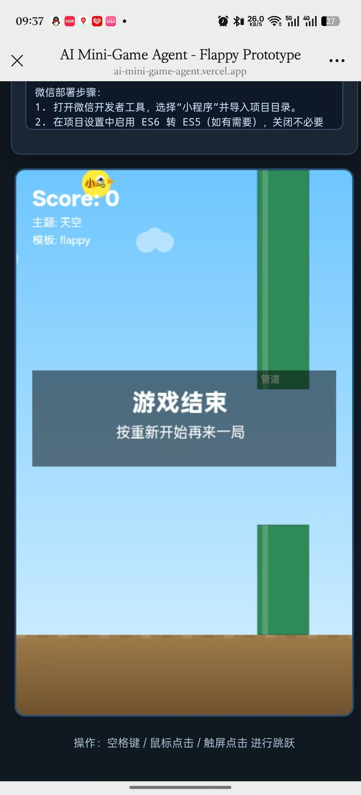
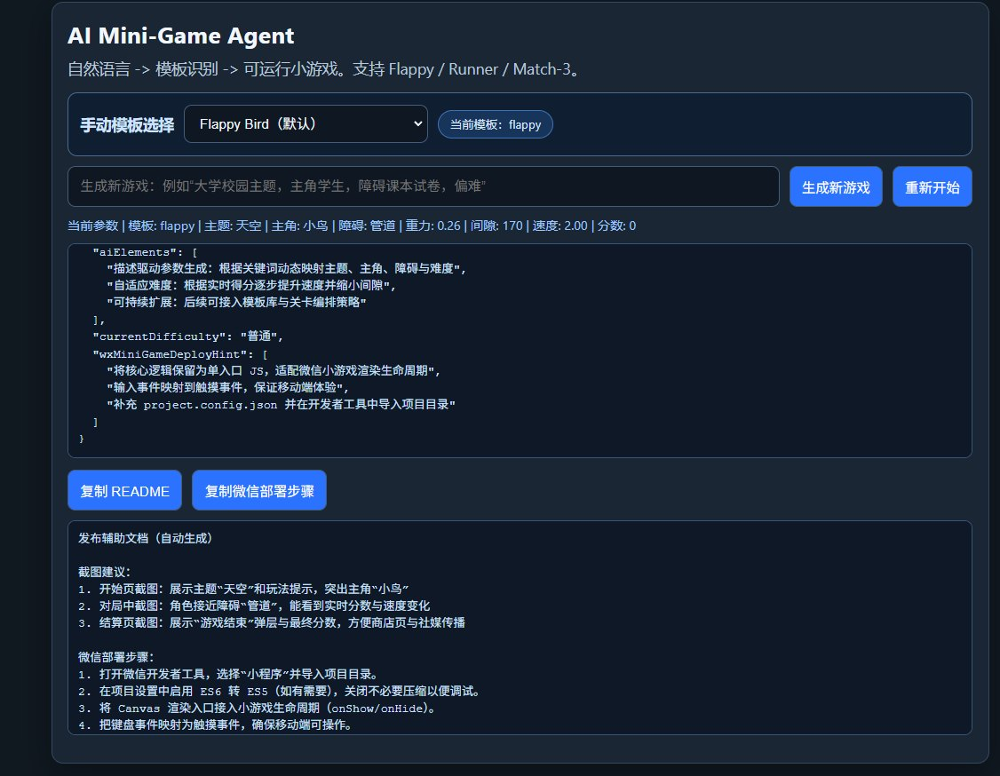
「抽个下午」：自媒体节目 AI 定制工具
和朋友一起做自媒体节目时，结合栏目内容用 Agent 深度定制的小工具，用 Replit 做成可运行的程序，把 AI 放进内容策划流程。
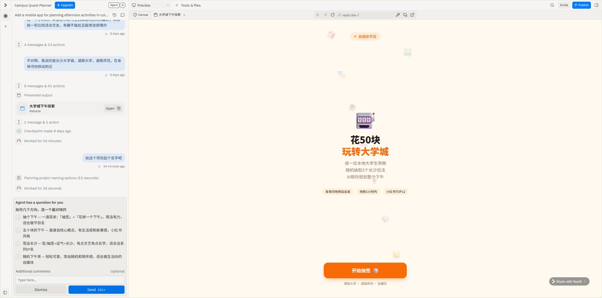
AIGC Prompt Generator：一键生成专业提示词 原型
把“写好提示词”这件事做成工具：选场景、选模型，自动生成结构化提示词。在招聘会现场有感而发做的原型，目前还没做完。
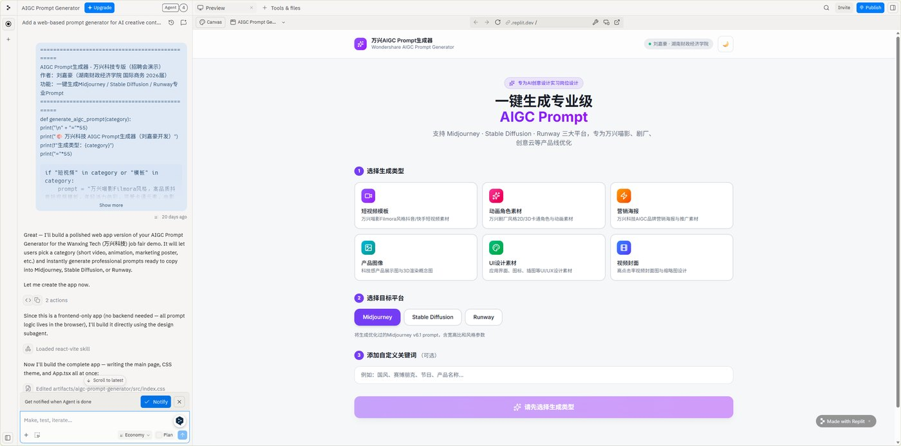
超级跳跳鱼：网页小游戏（Replit）
从零做出一个可玩的小游戏，第一次完整跑通“AI 辅助编程 → 调试 → 发布”。
产品拆解练习：休闲游戏的共同设计要素
把 PowerWash Simulator、Unpacking、WarioWare、Candy Crush 和国内解压类小游戏放在一起，归纳出“触觉模拟 + 过程奖励”“合集玩法用新鲜感对抗腻”等共同机制。
持续学习
自 2023 年上半年起持续跟进各代大模型和 AI Agent，模型订阅和 API 调用都是自费；借助 AI 研读《工程控制论》《通信的数学理论》《为什么》《深度学习》《强化学习》《设计数据密集型应用》等理工科经典，补上系统思维和 AI 理论的底子。
谢谢阅读 · 期待在燕山AI 和大家一起做产品
刘嘉豪 ｜ 17718995693 ｜ 2658656709@qq.com